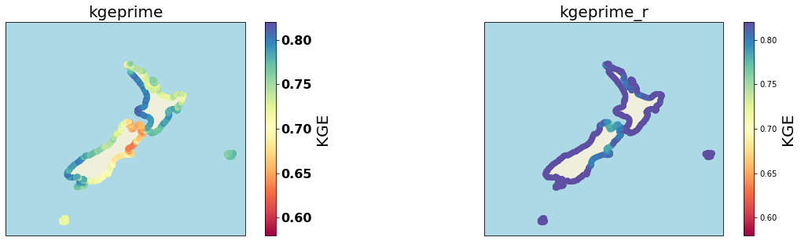
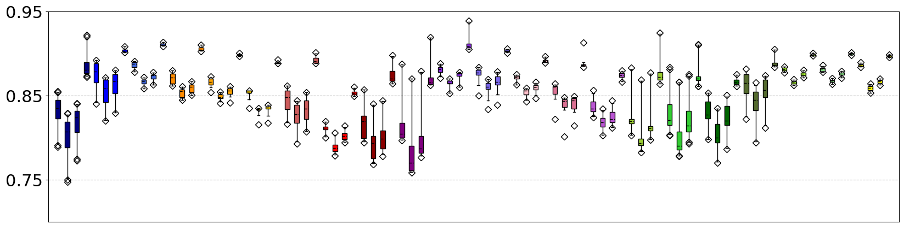
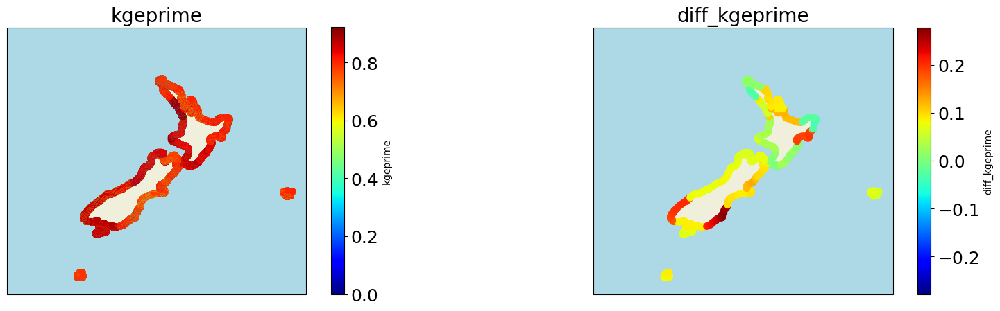
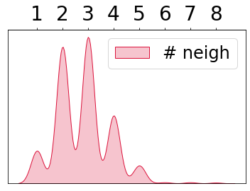
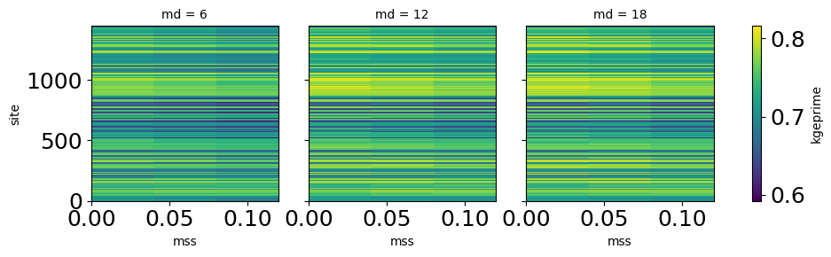

Contents
# import basics
import numpy as np
import xarray as xr
import matplotlib
import matplotlib.pyplot as plt
from matplotlib.colors import ListedColormap
import cartopy.crs as ccrs
import progressbar
# append sscode to path
import sys, os
sys.path.insert(0, '/Users/administrador/Documents/geocean-nz-ss')
data_path = '/Users/administrador/Documents/geocean-nz-ss/data'
# '/Volumes/ToshibaJT/geocean-nz-ss/data'
os.environ["SSURGE_DATA_PATH"] = data_path
from sscode.config import default_evaluation_metrics
from sscode.data import load_moana_hindcast
from sscode.validation import generate_stats
from sscode.plotting.validation import plot_stats
from sscode.plotting.utils import get_n_colors, plot_ccrs_nz
DATA PATH /Users/administrador/Documents/geocean-nz-ss/data
plt.hist(xr.open_dataset('../data/statistics/experiments/linear_superfinal.nc').squeeze().kgeprime-\
xr.open_dataset('../data/statistics/experiments/linear_superfinal_30h_150322.nc').squeeze().kgeprime)
(array([ 8., 120., 528., 588., 90., 33., 40., 33., 4., 4.]),
array([-0.04231222, -0.02865386, -0.01499549, -0.00133712, 0.01232124,
0.02597961, 0.03963797, 0.05329634, 0.0669547 , 0.08061307,
0.09427144]),
<BarContainer object of 10 artists>)
xr.open_dataset('../data/statistics/experiments/linear_superfinal_30h_150322.nc').squeeze().kgeprime
<xarray.DataArray 'kgeprime' (site: 1448)>
array([0.748171, 0.747504, 0.747904, ..., 0.763576, 0.769386, 0.781318])
Coordinates:
* site (site) int64 0 1 2 3 4 5 6 ... 1441 1442 1443 1444 1445 1446 1447
grad bool True
winds bool True
tlapse int64 3
tresample <U2 '1D'
region <U13 'local_2.5_2.5'
tsize float64 0.7
perpcs float64 0.98tres.elevation.plot()
<matplotlib.collections.QuadMesh at 0x7fdfeefead00>
bathy = xr.open_dataset('/Volumes/ToshibaJT/geocean-nz-ss/data/bathymetry/gebco_2020_n-25.0_s-55.0_w160.0_e190.0.nc')
bat = bathy.interp(lon=tres.lon.values,lat=tres.lat.values)
pepe = bat.where((bat>-1000)&(bat<1),800)
pep = pepe.where(pepe>700,1)
pep.where(pep<10).to_netcdf('../data/bathymetry/nz_1000m_elev_mask.nc')
xr.open_dataset('../data/bathymetry/nz_1000m_elev_mask.nc').elevation.plot()
<matplotlib.collections.QuadMesh at 0x7fdfc865fe50>

xr.open_dataset('../data/cfsr/cfsr_mapsta.nc').interp(lon=tres.lon.values,lat=tres.lat.values).MAPSTA.plot()
<matplotlib.collections.QuadMesh at 0x7fdfeef4a160>
mdarbf_sites = xr.open_dataset('../data/statistics/experiments/experiment_mdarbf_030322_sites.nc')
mdarbf_sitesahead = xr.open_dataset('../data/statistics/experiments/experiment_mdarbf_030322_sites_ahead.nc')
linear = xr.open_dataset('../data/statistics/')
mdarbf_sites.kgeprime.plot(vmin=0.5,vmax=0.9,cmap='rainbow')
<matplotlib.collections.QuadMesh at 0x7fe26fe8e5e0>
mdarbf_sitesahead.kgeprime.plot(vmin=0.5,vmax=0.8)
<matplotlib.collections.QuadMesh at 0x7fe26fc538b0>
moana = load_moana_hindcast()
loading the Moana v2 hindcast data...
pcas = xr.open_dataset('../data/statistics/experiments/experiment_mdarbf_250222.nc')
fig, ax = plt.subplots(figsize=(8,8),
subplot_kw={'projection':ccrs.PlateCarree(central_longitude=180)})
c = ax.scatter(moana.isel(site=pcas.site).lon.values,
moana.isel(site=pcas.site).lat.values,
c=pcas.kgeprime.squeeze().values,s=10,
transform=ccrs.PlateCarree())
fig.colorbar(c)
ax.coastlines('10m')
<cartopy.mpl.feature_artist.FeatureArtist at 0x7f79a3594910>
# load results
linear = xr.open_dataset('../data/statistics/experiments/experiment_linear_final_20211113.nc')
knn = xr.open_dataset('../data/statistics/experiments/experiment_knn_final_20211118.nc')
xgboost = xr.open_dataset('../data/statistics/experiments/experiment_xgboost_final_20211119.nc')
# mdarbf = xr.open_dataset(
# '../data/statistics/experiments/experiment_mdarbf_shores_1D_local_winds_grad_25_10_1500.nc')
# load all coast results
linear_all = xr.open_dataset('../data/statistics/experiments/linear_superfinal.nc')
knn_all = xr.open_dataset('../data/statistics/experiments/knn_superfinal.nc')
xgboost_all = xr.open_dataset('../data/statistics/experiments/xgboost_superfinal.nc')
# xgboost_play = xr.open_dataset('../data/statistics/experiments/xgboost_superfinal_play.nc')
from sscode.data import load_moana_hindcast
from sscode.plotting.validation import plot_stats
data_plot = xgboost_all.max(dim=['md','mss']).squeeze().copy()
data_plot = data_plot.assign({
'longitude': (('site'),load_moana_hindcast().isel(
site=data_plot.site).lon.values)
})
data_plot = data_plot.assign({
'latitude': (('site'),load_moana_hindcast().isel(
site=data_plot.site).lat.values)
})
loading the Moana v2 hindcast data...
loading the Moana v2 hindcast data...
plot_stats(data_plot,plot_stats=['kgeprime','kgeprime_r'],vmin=0.58,vmax=0.82,cmap='Spectral')

# load the sites in each shore
shore_sites = np.load('../data/statistics/shore_sites_last.npy',allow_pickle=True)
matplotlib.rc('xtick', labelsize=18)
matplotlib.rc('ytick', labelsize=18)
# make the boxplots
fig, ax = plt.subplots(figsize=(20,5))
for idata,data in enumerate([
linear_all.isel(
grad=0,perpcs=0,region=0,tlapse=0,tresample=0,winds=0,tsize=0
),
knn_all.isel(
grad=0,perpcs=0,region=0,tlapse=0,tresample=0,winds=0,tsize=0
).max(dim=['k_neighbors']),
xgboost_all.isel(
grad=0,perpcs=0,region=0,tlapse=0,tresample=0,winds=0,tsize=0,n_est=0,lr=0,loss=0
).max(dim=['md','mss']),
mdarbf # this is prepared
]):
box = ax.boxplot(
[data.sel(site=shore_sites[i]).pearson.values for i in range(len(shore_sites))],
patch_artist=True, sym='D', vert=True, whis=[1,99], widths=0.25,
medianprops={'c':'k','lw':1,'ls':'--'}, positions=np.arange(1,45,2)+0.5*idata
) if idata!=3 else ax.boxplot(
[data.sel(shore=i).pearson.max(dim='experiment').values \
for i in range(len(np.unique(data.shore.values)))],
patch_artist=True, sym='D', vert=True, whis=[1,99], widths=0.25,
medianprops={'c':'k','lw':1,'ls':'--'}, positions=np.arange(1,45,2)+0.5*idata
)
loc_colors = [
'navy','blue','royalblue','darkorange','orange','gold','indianred','red','darkred',
'purple','blueviolet','mediumslateblue','pink','palevioletred','mediumorchid',
'yellowgreen','limegreen','darkgreen','darkolivegreen','greenyellow','lightgreen','yellow'
]
for patch, color in zip(box['boxes'], loc_colors):
patch.set_facecolor(color)
ax.set_xticks([])
ax.set_ylabel('',fontsize=22,labelpad=20)
ax.set_yticks([0.65,0.75,0.85,0.95])
ax.set_yticklabels([0.65,0.75,0.85,0.95],fontsize=22)
ax.set_ylim([0.7,0.95])
ax.grid(ls='--')
plt.show()

# order mdarbf dataset and load linear final results
ordered_mdarbf = mdarbf.isel(
shore=list(np.intersect1d(mdarbf.site.values,linear_all.site.values,return_indices=True)[1])
)
ordered_mdarbf = ordered_mdarbf.assign({
'latitude': (('shore'),data_plot.latitude.values),
'longitude': (('shore'),data_plot.longitude.values)
})
kge_mdarbf_stats = np.load(
'../data/statistics/experiments/experiment_mdarbf_shores_1D_local_winds_grad_25_10_1500_kgeprime.npy'
)
ordered_mdarbf = ordered_mdarbf.assign({
'kgeprime': (('shore','experiment'),kge_mdarbf_stats[:,:,0])
})
ordered_mdarbf = ordered_mdarbf.assign({
'kgeprime_exp_winner': (('shore'),np.argsort(
np.concatenate([
ordered_mdarbf.kgeprime[:,2::3].isel(experiment=exp).values.reshape(-1,1) for exp in range(8)
], axis=1), axis=1
)[:,-1] + 1)
})
from matplotlib.colors import ListedColormap
ordered_mdarbf = ordered_mdarbf.assign({
'diff_kgeprime': (('shore'),
ordered_mdarbf.kgeprime.isel(experiment=23).values - \
ordered_mdarbf.kgeprime.isel(experiment=14).values
)
})
plot_stats(ordered_mdarbf,plot_stats=['kgeprime','diff_kgeprime'],
cmap='jet', #ListedColormap(['pink','blue','green','orange','yellow'])
)

ordered_mdarbf.perpcs[2::3,0],ordered_mdarbf.nsamples[2::3,0]
(<xarray.DataArray 'perpcs' (experiment: 8)>
array([0.98, 0.98, 0.98, 0.98, 0.98, 0.98, 0.98, 0.98])
Coordinates:
* experiment (experiment) int64 2 5 8 11 14 17 20 23
shore int64 5
site int64 0,
<xarray.DataArray 'nsamples' (experiment: 8)>
array([ 10., 25., 50., 100., 250., 500., 1000., 1500.])
Coordinates:
* experiment (experiment) int64 2 5 8 11 14 17 20 23
shore int64 5
site int64 0)
# knn winner
knn_all = knn_all.assign({
'kgeprime_knn_winner': (('site'),np.argsort(
np.concatenate([
knn_all.isel(k_neighbors=nn).kgeprime.values.reshape(-1,1) for nn in range(49)
], axis=1), axis=1
)[:,-1]),
'longitude': (('site'),load_moana_hindcast().isel(
site=data_plot.site).lon.values),
'latitude': (('site'),load_moana_hindcast().isel(
site=data_plot.site).lat.values)
})
plot_stats(knn_all.max(dim='k_neighbors'),plot_stats=['kgeprime','kgeprime_knn_winner'],
cmap=ListedColormap(['red','blue']))
loading the Moana v2 hindcast data...
loading the Moana v2 hindcast data...
import seaborn as sns
fig, ax = plt.subplots()
sns.kdeplot(knn_all.kgeprime_knn_winner.values.reshape(-1), ax=ax,
color='crimson',shade=True,clip=(0,50),label='# neigh')
sax = ax.secondary_xaxis('top')
sax.set_xticks([1,2,3,4,5,6,7,8])
sax.set_xticklabels([1,2,3,4,5,6,7,8],fontsize=28)
ax.legend(fontsize=24)
ax.set_xticks([]), ax.set_yticks([]), ax.set_ylabel('')
plt.show()
fig, ax = plt.subplots()
sns.kdeplot(np.argsort(
np.concatenate([
xgboost_all.kgeprime.sel(md=6).values.reshape(-1,1),
xgboost_all.kgeprime.sel(md=12).values.reshape(-1,1),
xgboost_all.kgeprime.sel(md=18).values.reshape(-1,1)
], axis=1), axis=1
)[:,-1], # best depth
# xgboost_all.kgeprime.sel(mss=0.02).values.reshape(-1),
color='orange',shade=True,clip=(0,50),label='MAX depth'
)
sax = ax.secondary_xaxis('top')
sax.set_xticks([0,1,2])
sax.set_xticklabels([6,12,18],fontsize=28)
ax.legend(fontsize=24,loc='upper left')
ax.set_xticks([]), ax.set_yticks([]), ax.set_ylabel('')
plt.show()
fig, ax = plt.subplots()
sns.kdeplot(ordered_mdarbf.kgeprime_exp_winner.values.reshape(-1),
color='#409D10',shade=True,clip=(0,50),label='Best interp. \n points')
sax = ax.secondary_xaxis('top')
sax.set_xticks([4,5,6,7,8])
sax.set_xticklabels([100,250,500,1000,1500],fontsize=28,rotation=45)
ax.legend(fontsize=24,loc='upper left')
ax.set_xticks([]), ax.set_yticks([]), ax.set_ylabel('')
plt.show()


---------------------------------------------------------------------------
NameError Traceback (most recent call last)
/var/folders/24/g13dzqsd2c56y95zxrf_ytbc0000gn/T/ipykernel_20795/2876046193.py in <module>
27 plt.show()
28 fig, ax = plt.subplots()
---> 29 sns.kdeplot(ordered_mdarbf.kgeprime_exp_winner.values.reshape(-1),
30 color='#409D10',shade=True,clip=(0,50),label='Best interp. \n points')
31 sax = ax.secondary_xaxis('top')
NameError: name 'ordered_mdarbf' is not defined
# linear models winner
linear_all = linear_all.assign({
'kgeprime_models_winner': (('site'),np.argsort(
np.concatenate([
linear_all.kgeprime.values.reshape(-1,1),
knn_all.kgeprime.max(dim='k_neighbors').values.reshape(-1,1),
xgboost_all.kgeprime.max(dim=['md','mss']).values.reshape(-1,1),
# ordered_mdarbf.kgeprime.max(dim='experiment').values.reshape(-1,1)
], axis=1), axis=1
)[:,-1]),
'longitude': (('site'),load_moana_hindcast().isel(
site=data_plot.site).lon.values),
'latitude': (('site'),load_moana_hindcast().isel(
site=data_plot.site).lat.values)
})
plot_stats(linear_all,plot_stats=['kgeprime','kgeprime_models_winner'],
cmap=ListedColormap(['crimson','gray','navy']),s=10)
# xgboost play
xgboost_all.kgeprime.plot(col='md')
plt.show()

pca_attrs = {
'grad': [False,True],
'winds': [False,True],
'tlapse': [1,2,3], # 1 equals to NO time delay
'tresample': ['6H','12H','1D'],
'region': [('local',(1.5,1.5)),('local',(2.5,2.5)),(True,default_region_reduced)]
}
linear_attrs = {
'tsize': [0.7], 'perpcs': [0.98]
}
knn_attrs = {
'tsize': [0.7], 'perpcs': [0.98],
'kneighs': ['best',3,6,9] # None calculates the optimum k-neighs
}
limits_metrics = {
'bias': [-0.2,0.2],
'si': [0.5,1.5],
'rmse': [0.0,0.1],
'pearson': [0.7,1.0],
'spearman': [0.7,1.0]
}
def plot_results(model='linear',metric='rmse',var_1='grad',var_2='region',isite=2,
extra_1=0,extra_2=0,extra_3=0,extra_4=0,extra_5=0,extra_6=0):
# TODO: add docstring
# print(pca_attrs, linear_attrs)
stats = linear_stats if model=='linear' else knn_stats
model_attrs = linear_attrs if model=='linear' else knn_attrs
var_1_values = pca_attrs[var_1] if var_1 in pca_attrs.keys() \
else model_attrs[var_1]
var_2_values = pca_attrs[var_2] if var_2 in pca_attrs.keys() \
else model_attrs[var_2]
nrows, ncols = len(var_1_values), len(var_2_values)
fig, axes = plt.subplots(
nrows=nrows,ncols=ncols,figsize=(ncols*6,nrows*5),
subplot_kw={'projection':ccrs.PlateCarree(central_longitude=180)}
)
metrics_no_plot = []
metrics_no_plot_values = [
extra_1,extra_2,extra_3,extra_4,extra_5,extra_6
]
for dim in stats.dims: metrics_no_plot.append(dim) \
if dim!=var_1 and dim!=var_2 and dim!= 'site' else None
# default variables can be changed here
metric_stats = stats[metric].isel(
dict(zip(metrics_no_plot,metrics_no_plot_values[:len(metrics_no_plot)]))
)
max_model = np.argmax(metric_stats.values.reshape(
len(metric_stats.site.values),-1
), axis=1)
min_model = np.argmin(metric_stats.values.reshape(
len(metric_stats.site.values),-1
), axis=1)
i_model = 0
for irow in range(nrows):
for icol, ax in enumerate(axes[irow,:]):
ps = ax.scatter(
x=locations.lon.values, y=locations.lat.values,
c=metric_stats.isel(
{var_1:irow,var_2:icol}
).values, cmap='cool', zorder=200, s=100,
vmin=metric_stats.min(), vmax=metric_stats.max(),
transform=ccrs.PlateCarree()
) # metric values
ax.text(
x=162, # locations.lon.values[isite],
y=-32, # locations.lat.values[isite],
s=metric + ': ' + str(metric_stats.isel(
{var_1:irow,var_2:icol,'site':isite}
).values)[:6], transform=ccrs.PlateCarree(),
size=14 # change size if wanted
) # metric value in a desired location
ax.scatter(
x=locations.lon.values[isite],
y=locations.lat.values[isite],
s=300, transform=ccrs.PlateCarree(),
zorder=150, c='yellow',edgecolors='red'
) # highlight desired location
# highlight best models in screen
sites_to_mark_max = np.where(max_model==i_model)[0]
sites_to_mark_min = np.where(min_model==i_model)[0]
if len(sites_to_mark_max):
ax.scatter(
x=locations.lon.values[sites_to_mark_max],
y=locations.lat.values[sites_to_mark_max],
marker='*', c='white', s=80, edgecolors='white',
transform=ccrs.PlateCarree(), zorder=300
)
if len(sites_to_mark_min):
ax.scatter(
x=locations.lon.values[sites_to_mark_min],
y=locations.lat.values[sites_to_mark_min],
marker='*', c='black', s=80, edgecolors='black',
transform=ccrs.PlateCarree(), zorder=300
)
ax.set_title(
'{}: {} -- {}: {}'.format(
var_1, var_1_values[irow],
var_2, var_2_values[icol]
)
) # plot the subplots title
i_model += 1
plot_ccrs_nz(axes.flatten(),plot_labels=(False,None,None))
for ax in axes.flatten(): ax.set_facecolor('lightblue')
suptitle = metric.upper() + '\n {} \n'.format(
dict(zip(metrics_no_plot,metrics_no_plot_values[:len(metrics_no_plot)]))
) # add default variables to suptitle
fig.suptitle(suptitle,fontsize=20)
cbar_ax = fig.add_axes([0.93,0.15,0.03,0.7])
cb = fig.colorbar(ps,cax=cbar_ax,orientation='vertical')
plt.close()
return fig
kw = dict(
model=['linear','knn'],
metric=list(limits_metrics.keys()),
var_1=list(pca_attrs.keys())+list(linear_attrs.keys())+['kneighs'],
var_2=list(pca_attrs.keys())+list(linear_attrs.keys())+['kneighs'],
isite=range(10), # this is to modify desired locations print
extra_1=range(3),extra_2=range(3),extra_3=range(3),
extra_4=range(3),extra_5=range(3),extra_6=range(3)
)
i = pn.interact(plot_results,**kw)
panel = pn.Column(
pn.Row(
pn.pane.Markdown('''
## Results of all the models are shown below
''')
),
pn.Row(
i[0][0],i[0][1],i[0][2],i[0][3],i[0][4]
),
pn.Row(
i[0][5],i[0][6],i[0][7],i[0][8],i[0][9]
),
pn.Row(i[0][10], pn.pane.Markdown(
''' PCA attributes: {} and Models attributes: LINEAR: {} ---- KNN {} '''.format(
pca_attrs, linear_attrs, knn_attrs
)
)),
pn.Row(i[1][0])
)
panel.show() # launch interactive server